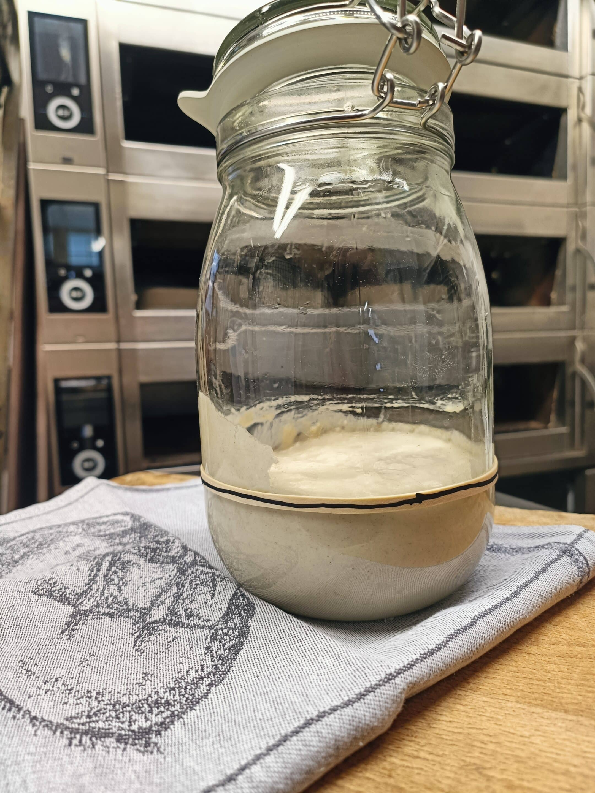

Ontdek de voordelen van ambachtelijk desembrood — niet alleen voedzaam, maar ook een slimme belegging in je dagelijkse brood.
Desembrood is een traditioneel brood dat, oorspronkelijk, wordt gemaakt zonder gebruik van commerciële gist. In plaats daarvan wordt het deeg gefermenteerd met een natuurlijke starter, bestaande uit bloem en water, die de tijd krijgt om te fermenteren en wilde gisten te creëren.
Dit proces geeft desembrood zijn karakteristieke smaak en textuur. In tegenstelling tot gewoon brood, dat vaak snel wordt geproduceerd met toevoegingen, is desembrood rijk aan voedingsstoffen en heeft het een langere houdbaarheid. Het verschil zit hem in de eenvoud en de tijd die het deeg krijgt om te ontwikkelen.
De eerste sporen van desembrood werden gevonden in het oude Egypte, waar bakkers ontdekten dat gefermenteerd deeg een heerlijke smaak en textuur gaf.
Met de opkomst van handel verspreidde het gebruik van desem zich naar Griekenland en Rome, waar het een geliefd onderdeel van de dagelijkse maaltijd werd.
De komst van commerciële gist veranderde de bakkerij-industrie, maar desembrood bleef populair onder liefhebbers van traditioneel brood.
In de jaren '70 begon een hernieuwde interesse in ambachtelijk brood, met een focus op kwaliteit en natuurlijke ingrediënten.
BRodijnen Desembakkerij opent zijn deuren, met een toewijding aan het maken van authentiek desembrood dat voedt en verbindt.
Bevat natuurlijke probiotica die de darmflora ondersteunen en de spijsvertering bevorderen.
Dankzij het langdurige fermentatieproces behoudt desembrood meer mineralen en vitamines.
De complexe koolhydraten zorgen voor een langdurig verzadigd gevoel, waardoor je minder snel weer honger hebt.
Helpt bij het stabiliseren van de bloedsuikerspiegel dankzij een lagere glycemische index.

Desembrood is niet alleen een gezonde keuze, maar ook een slimme financiële beslissing. Door de hogere voedingswaarde en het verzadigende effect heb je minder sneetjes nodig om vol te raken.
Daarnaast blijft desembrood langer vers, waardoor je minder verspilling hebt. Dit maakt het een duurzame keuze voor zowel je portemonnee als het milieu. Omgekeerd beleggen met je brood — investeren in minder voor meer.
"Een echte aanrader, je proeft dat de zuurdesembroden met liefde gebakken worden volgens oud vakmanschap."
S. Schumann
"Wat heb ik weer lekker geluncht met een brood en krentenbollen van BRodijnen. Ik fiets er speciaal voor naar Nijmegen."
M. van Oostendorp
"Really good breads and tasty treats. Favourite bakery in town. Prices are super fair."
M. Oostdijk